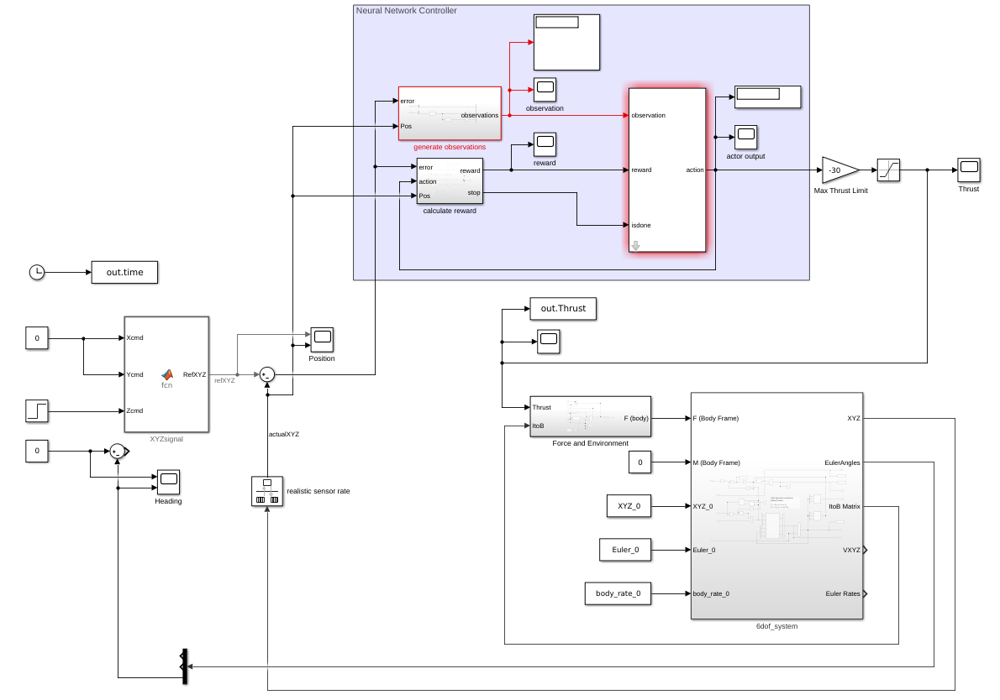
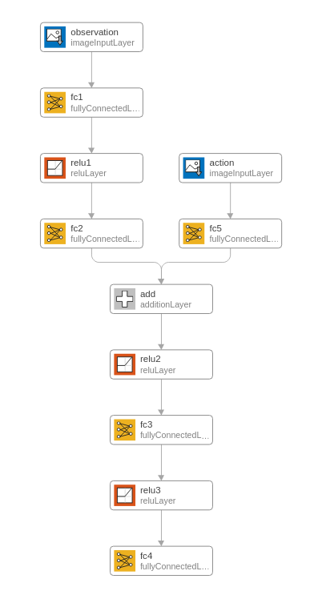

Neural Newtork Controller
Introduction
A classic PID controller uses combination of error, derivative of error, and integral of error to generate desired thrust command. It is a function that humans are likely to understand, design, and tune. Deep Neural Network is, at its core, a function approximater. Thus, it is possible to implement deep neural network to control a drone.
This project demonstrates the implementation of deep neural network for the altitude control of the quadcopter. In a meantime, to showcase some of its advantages and disadvantages.
Project Overview
Use Reinforcement learning, Deep Neural Network, to control the Z position of the drone.
Compare the controller with the classic PID controller under different level of wind disturbance along z-axis.
Deep Neural Network Controller Structure: take Z Position and Z Error as input, then directly output the Thrust command.
Classic PID Controller Structure: take Z error and calculate Thrust command
Demo
WindLevel set from [5 10]. The wind is turn on after time = 3 sec.
Left: PID controller. Right: DNN controller.
DNN controller can hold its Z = 1 position, having little oscillation under different level of wind disturbance; its Z position varies only 10 % even at the highest wind disturbance. Although this PID controller is designed to reach a rise time as small as possible (0.25 sec), it still cannot hold its Z position. At Wind = 10 level, it moves atop to 2 meter and down to negatice Z position.
Z position and Thrust plot
(No Wind)
(Wind = 10)
Workflow
- Decide observation states and action states
- Decide the structure of the neural network. (CNN, RNN, and etc.)
 - Design "appropriate" reward function. (This is the key step, since you have various structure to choose and different weight values to try)
- Train, if things don't go right, go back to 1,2 or 3 step and change something based on your "knowledge and experience". (The following animation shows how DNN learned from high frequency "bang-bang" thrust control to desired thrust control. See how different it is!)
Advantages
- DNN controller is much more responsive, resisting higher disturbance
- DNN controller is likely to be used on different size, weight, and configuration of drone without re-tuning the PID gains.
- DNN controller can use data from rich-sensors, for instance camera, lidar and etc.
Disadvantages
- How to craft a reward function so that the DNN controller can learn as what we want it to do. (Although some say one of the advantage of neural network is that it can learn itself, to me, I still need to monitor the training process to determine whether it is "learning along the right path".)
- Training time and computing resources are enormous. (For this project, it requires 24 hour and 6 GB memory to train)
- The generated command output might be impratical in real cases. (This project assumes using perfect motors that can track the thrust command perfectly. But to implement DNN controller in the real world, it is necessary to model the motor in the sametime)